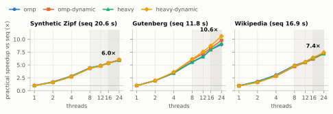
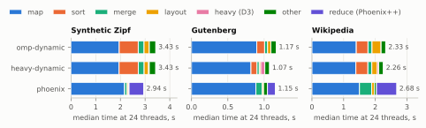
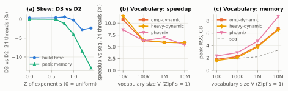
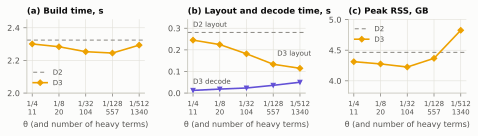
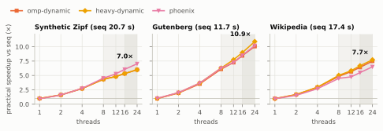

Abstract. We build word-to-document posting lists from pretokenized text on a 24-thread hybrid laptop CPU (8 performance and 8 efficiency cores). Following the map / local aggregation / reduce organization of Phoenix [1], our OpenMP builder (D2) fills a private hash table per thread and merges the threads' sorted dictionaries by term range in two passes. Our improvement (D3) stores the most frequent terms as shared document bitmaps under a memory budget. Every builder writes a byte-identical canonical index, checked by more than 10,000 tests against an independent oracle and by checksum in all 1,795 benchmark runs. On synthetic Zipf text, Project Gutenberg books and Wikipedia lead paragraphs, the best builder is 6.0×, 10.6× and 7.4× faster than our best sequential builder at 24 threads. The map phase scales about as far as the cores' clock rates allow; the remaining gap is merging dictionaries that every thread holds in part. D3 makes the dynamic schedule's merge 36% cheaper and better balanced, but gains only 1–8% end to end. Against the same index built on the authors' Phoenix++ runtime, our builder takes 16% less time on Wikipedia and 15% more on the synthetic corpus, a difference explained by how much of the vocabulary each thread duplicates.
An inverted index maps every term of a collection to its posting list, the sorted list of documents that contain it. Building one is a group-by: our corpora have 200–330 million tokens that collapse into 30–215 million distinct (term, document) pairs. Each token costs a hash-table lookup that usually misses the cache, and grouping the work of many threads requires a merge. Ranger et al. [1] showed that this shape, map tasks that emit key/value pairs into per-worker buffers followed by a per-key reduce, runs well on shared-memory machines; their Phoenix runtime is the starting point of this project.
The scope is index construction only: pretokenized input, document-level postings, no ranking, positions or compression. Our contributions are:
Phoenix [1] runs map tasks that emit pairs into per-worker intermediate buffers, partitions keys among reduce tasks and merges the sorted reduce output. Phoenix++ [2] replaced its fixed buffers with pluggable containers (hash tables, arrays) and combiners that aggregate values as they are emitted; its word-count example is the closest relative of index construction (the Phoenix "reverse index" example indexes HTML links, not words). The information-retrieval literature describes in-memory single-pass inversion with a hash table of terms and growing posting lists [4], sort-based inversion, and bitvectors for very frequent terms [3]. We choose merge splitters with regular sampling, as in parallel sorting by regular sampling [5].
Input. One document per line; the document ID is the 0-based line number, and an empty line is a valid empty document. Tokens are maximal runs of bytes other than ASCII whitespace and are otherwise opaque, so UTF-8 passes through. Lowercasing and splitting on non-alphanumerics happen offline (tools/pretokenize.py) and are timed separately (Table 1). Output. A binary index holding the document, term and posting counts; term offsets and bytes, with terms in strictly increasing byte order; and posting offsets and 32-bit document IDs, strictly increasing within each list. Because this layout is unique, a builder is correct exactly when its file is byte-identical to the oracle's, whatever the thread count, schedule or heuristic.
Testing. The oracle (naive) is a deliberately simple std::map<string, set<uint32>> builder with its own input reader. The default suite (make test) runs 13 hand-written cases with hand-written expected outputs (empty corpus, empty documents, repeated and prefix terms, unusual whitespace, a missing final newline, UTF-8, a 10,000-byte token). It then runs 200 random corpora from our generator, with random size, vocabulary, skew and length distribution, through 9 builder variants at 1, 2, 3, 7, 16 and 24 threads; odd counts exercise block and range boundaries. A 600,001-document corpus makes D3's bitmaps span several decode segments. An independent checker recounts every posting from the corpus. All 10,462 checks pass, as do 2,622 under AddressSanitizer and UBSan, and 451 for the Phoenix++ build. Planted bugs were caught: an inconsistent range cut, wrong segment offsets, a wrong heavy/light order and a dropped bitmap word. ThreadSanitizer could not be run (it needs LLVM's OpenMP runtime, which is not installed). Finally, every benchmark run records the index checksum, and all runs on a corpus agree.
All builders read the whole file into memory and find document boundaries with a parallel newline count and prefix sum. They share one open-addressing hash table (linear probing, load factor ≤ 0.5, keys are views into the input buffer, so no allocation per token, and a word-at-a-time hash). Speedups therefore measure parallelization, not a change of data structure.
seq scans documents in order, looks each token up in the hash table and appends the document ID unless it equals the list's last entry. Processing documents in order makes deduplication free and keeps every list sorted. It then sorts the terms and lays out the index. The map phase is 88–97% of its time: 35–100 ns per token, mostly cache misses into the table.
Map. Each thread builds a private table over its documents. With the static schedule a thread gets one contiguous block of equal bytes, so all of thread t's document IDs precede thread t+1's and merging a term's lists is a concatenation in thread order. With the dynamic schedule (16 chunks per thread, schedule(monotonic:dynamic)) the load balances across core types, but a term's lists interleave and need a k-way merge. Local sort. Each thread sorts its dictionary by term. Splitters. Regular sampling of the sorted runs, weighted by run length, picks R = 4T term ranges (oversplitting for balance); every run is cut at the same keys by binary search. Two-pass merge. Over the ranges, with a dynamic schedule: pass 1 merges the T runs by term to count distinct terms and postings and records the merge order; prefix sums give each range's output offsets; pass 2 writes term bytes and posting lists in place. Output is deterministic and nothing is reallocated. Temporaries are freed in parallel.
Why. In Zipf-distributed text a few terms occur in a large fraction of documents. On Wikipedia the 104 terms with document frequency ≥ N/32 make up 43% of tokens and 35% of postings. In D2 they grow per-thread vectors by doubling, and under the dynamic schedule each is merged by a single thread, so the layout phase's imbalance reaches 1.35 (max/mean) at 24 threads. Detection. Threads count document frequencies on a stratified 1% sample. Per-thread candidates are pruned with a pigeonhole bound, and exact sample counts are then summed. A term is heavy if its sampled frequency is ≥ θ. The default θ = 1/32 is the break-even density at which an N-bit bitmap is as large as a list of 32-bit IDs. Budget. The number of heavy terms H is capped so that H·N/8 bytes fit the budget (default 1 GB), keeping the most frequent. Misclassification only costs speed, never correctness. Map. Heavy terms are pre-inserted in every local table with a heavy ID; a heavy token sets bit d in that term's shared bitmap, after the same last-document check as D2. Chunks start at arbitrary documents, so only a chunk's first and last 64-bit word can be shared with another thread. Those use a relaxed atomic OR (std::atomic_ref); interior words use a plain OR. Merge and decode. Light terms are merged as in D2. Heavy terms need no merge: the write pass reserves their slots in term order, and balanced tasks of (heavy term × 262,144-document segment) count bits, take prefix sums and write IDs with count-trailing-zeros.
Measurement forced two design changes. Aligning chunks to 512 documents, planned in order to avoid atomics, collapsed Gutenberg's 4,976 books into about 10 chunks and made D3 2× slower; boundary atomics replaced it. Without the last-document check, every repeat of a word in a long book rewrote a scattered bitmap word, which made D3 23% slower on Gutenberg.
The catalogue names Phoenix as the baseline, and its examples do not build a word index, so we wrote ours as a Phoenix++ application (baselines/phoenix_index.cpp, about 300 lines). We supply four pieces. The split makes ~1 MB chunks of whole documents, as in Phoenix++'s word count. The map emits (term, document) per token. The combiner is a per-thread posting list with last-document deduplication. The reduce sorts a term's IDs, followed by the same canonical layout. Phoenix++'s unmodified code does the scheduling, the per-thread hash tables, the hash partitioning into T reduce buckets, the cross-thread union and the sort/merge of reduced terms. It runs pinned like ours, reads the same input and produces the same checksum. Phoenix++ predates C++11 name lookup and needs -fpermissive with GCC 16.
Machine. Intel Core i7-13700HX laptop: 8 P-cores with 2 hyperthreads each (up to 5.0 GHz), 8 E-cores (up to 3.7 GHz), 30 MB L3, one NUMA node, 31 GB RAM. Linux 7.3, GCC 16.2.1 with -O3 -march=native and libgomp, AC power, performance power profile. Pinning. Threads are pinned (OMP_PLACES, OMP_PROC_BIND=close) first one per P-core, then to E-cores, then to the P-cores' second hyperthreads. Up to 8 threads therefore use only P-cores, 12 and 16 add E-cores, and 24 adds hyperthreads; figures shade these regions. Protocol. Each run is a fresh process (clean peak RSS) after one untimed warm-up that loads the input into the page cache. Each configuration runs 5 times, in a new random order per repetition, and we report the median. Repeated runs differed by a median of 0.5–2.5% (max/min). Measures. Build time covers the document-boundary scan and every builder phase up to a complete in-memory canonical index, including freeing temporaries. Reading the file, writing the index and offline tokenization are reported separately. Scaling speedup is Tv(1)/Tv(p) for a variant v; practical speedup is Tseq/Tv(p). Counters include tokens, hash probes, local dictionary entries, heavy terms and peak RSS. Smaller corpora (25% and 50%) take every 4th or 2nd document, so only the size changes.
| Synthetic Zipf | Gutenberg books | Wikipedia leads | |
|---|---|---|---|
| documents · mean tokens per document | 2,000,000 · 100 | 4,976 · 65,438 | 6,407,814 · 44.5 |
| tokens · distinct terms | 200.1 M · 1.00 M | 325.6 M · 0.78 M | 285.3 M · 2.78 M |
| postings · postings per token | 163.1 M · 0.82 | 29.9 M · 0.09 | 214.5 M · 0.75 |
| input · index size | 0.71 · 0.67 GB | 1.73 · 0.14 GB | 1.68 · 0.93 GB |
| one-time preprocessing (Python, multiprocess) | generation < 1 s | tokenization 13.3 s | tokenization 53.9 s |
| load from page cache · write index | 0.10 · 0.15 s | 0.29 · 0.05 s | 0.27 · 0.19 s |
seq build time · peak RSS | 20.65 s · 2.2 GB | 11.80 s · 2.0 GB | 16.95 s · 3.8 GB |
Figure 2 and Table 2 show build time from 1 to 24 threads. With D3 and the dynamic schedule, the best builder reaches a practical speedup of 6.0× (Zipf), 10.6× (Gutenberg) and 7.4× (Wikipedia); scaling speedups are similar (6.0×, 10.5×, 7.9×). At one thread every D2 variant is within 2.1% of seq, so parallelization costs little. On the 8 P-cores the builders reach 4.3–6.1×, and E-cores plus hyperthreads add a further 1.35–1.73×. The two schedules trade off differently by input. Static blocks have equal bytes, but E-core threads are slower, so the map phase's imbalance is 1.07–1.19 against 1.02–1.03 with the dynamic schedule. That makes the dynamic schedule clearly better on Gutenberg (1.20 against 1.31 s at 24 threads). On Wikipedia at 8 threads, static is faster (3.43 against 3.61 s), because the dynamic schedule's k-way merge of interleaved lists costs 0.46 s of layout against 0.08 s; this is the cost D3 removes (§6.4). Corpus size changes little (Table 3): speedup rises slightly from 25% to 100% as fixed costs amortize, and the curves keep their shape.

seq (E1). omp = D2, heavy = D3; -dynamic = dynamic schedule. Shading: 12–16 threads add E-cores (light), 24 adds hyperthreads (dark). Bold: best variant at 24 threads.| variant | Zipf, 8 | Zipf, 24 | Gutenberg, 8 | Gutenberg, 24 | Wikipedia, 8 | Wikipedia, 24 |
|---|---|---|---|---|---|---|
seq (1 thread) | 20.65 | 11.80 | 16.95 | |||
D2 omp (static) | 4.63 | 3.48 | 2.10 | 1.31 | 3.43 | 2.34 |
D2 omp-dynamic | 4.75 | 3.45 | 1.96 | 1.20 | 3.61 | 2.35 |
D3 heavy (static) | 4.66 | 3.50 | 2.13 | 1.28 | 3.51 | 2.36 |
D3 heavy-dynamic | 4.74 | 3.42 | 1.92 | 1.11 | 3.49 | 2.28 |
| practical speedup of the best | 4.5× | 6.0× | 6.1× | 10.6× | 4.9× | 7.4× |
| corpus | 25% of documents | 50% | 100% |
|---|---|---|---|
| Synthetic Zipf | 6.08 s · 4.0× / 5.4× | 11.52 s · 4.3× / 5.8× | 20.65 s · 4.4× / 6.0× |
| Gutenberg | 2.84 s · 5.9× / 9.8× | 5.64 s · 6.0× / 10.2× | 11.80 s · 6.1× / 10.6× |
| Wikipedia | 4.50 s · 4.7× / 7.0× | 8.67 s · 4.8× / 7.3× | 16.95 s · 4.9× / 7.4× |
The map phase runs close to the hardware limit. We sampled core frequencies during runs: 4.75 GHz on average with one busy thread, 3.94 GHz with all 8 P-cores busy, and 3.6 GHz on E-cores. Eight P-cores can therefore deliver at most about 8 × 3.94 / 4.75 ≈ 6.6× of one core at full turbo, and the map phase reaches 5.3–6.8× at 8 threads (10.3–13.2× at 24 with D3-dynamic). The CPU time spent in map at 8 threads is 1.14× (Gutenberg), 1.28× (Wikipedia) and 1.42× (Zipf) that of seq. On real text the clock drop (1.21×) accounts for this; on Zipf, tokens drawn independently from a million terms add memory traffic.
The phases after the map are the gap. At 24 threads they take 23% (Gutenberg), 38% (Wikipedia) and 43% (Zipf) of build time (Figure 3). The cause is replication: a thread's dictionary holds every term that occurs in its documents, so the threads together hold 17.1× (Zipf), 3.8× (Gutenberg) and 3.2× (Wikipedia) as many entries as there are distinct terms. On Zipf every thread sorts most of the vocabulary, and local sort takes 0.78 s at 24 threads, more than seq's single sort of the whole vocabulary (0.40 s). If these phases scaled like the map, Zipf would build in about 2.0 s (10×) instead of 3.4 s. Replication is much lower on real text because rare words are bursty: they cluster in a few documents [6], whereas our generator draws every token independently. This cost is inherent to the "local dictionaries with sorted merging" design.

Skew (E3; 2M documents, V = 10⁶, Zipf s from 0 to 1.4; Figure 4a). Build time at 24 threads falls from 6.2 s (s = 0) to 0.56 s (s = 1.4), since skewed text has fewer distinct (term, document) pairs and its frequent terms stay in cache. D3's advantage grows with skew, up to 3% less time and 13% less memory at s ≥ 1.2. At s = 0 the sample finds no heavy terms and D3 costs nothing measurable, so the uniform vocabulary we had expected to be D3's unfavorable case is not. Vocabulary (E4; 2M documents, 200M tokens, V from 10⁴ to 10⁷; Figure 4b, c). A small vocabulary stays in cache and scales best (11.6× at V = 10⁴). From 10⁵ on, speedup settles near 6×, and parallel memory grows faster than sequential memory (6.6 against 3.3 GB at V = 10⁷), which is replication again. Document length (E4; mean 10 to 10,000 tokens at 200M tokens). Length hardly matters: our build takes 3.49 to 3.26 s at 24 threads (6.5–7.0×), so per-document overhead is negligible even for 10-token documents.

seq's memory.With the dynamic schedule D3 removes what it targets. On Wikipedia at 24 threads the layout phase falls from 0.28 to 0.18 s (θ = 1/32) and to 0.13 s (θ = 1/128), and its imbalance from 1.33 to 1.16 and 1.07 (Figure 5b). Because layout is a small share of the total, the end-to-end gain is 3% (2.32 → 2.25 s), with 5% less peak memory (4.46 → 4.23 GB). Across the E1 corpora the gain at 24 threads is 1% (Zipf), 3% (Wikipedia) and 8% (Gutenberg). On Gutenberg 96% of tokens hit one of 27,110 heavy terms, so D3 also skips most posting-vector growth in the map. The threshold gives a U-shaped build time: memory is lowest at the default 1/32, and time is lowest at 1/128 (Figure 5). Table 4 covers sample rate and budget.
Unfavorable cases. (i) θ too low: at θ = 1/512 the 1,340 bitmaps hit the 1 GB cap and peak memory (4.83 GB) exceeds D2's by 8%. (ii) Oversampling: a 10% sample costs 0.11 s and makes D3 slower than D2; a 0.1% sample finds 101 of the 104 heavy terms in 3 ms. (iii) One thread on Wikipedia: D3 is 6% slower than D2 (18.07 against 17.07 s). The 79 MB of bitmaps exceed the 30 MB L3, so bit writes miss the cache (+0.77 s in map), and sampling (0.13 s) and decoding (0.10 s) add more. From 8 threads on, each thread writes a narrow slice of every bitmap and the penalty disappears. (iv) Static schedule: layout is already cheap (0.08 s at 8 threads), so D3 has nothing to remove and lands within ±2% of D2.

| setting | heavy terms | sampling time | build time | peak RSS |
|---|---|---|---|---|
| sample 0.1%, θ = 1/32 | 101 | 0.003 s | 2.26 s | 4.23 GB |
| sample 1% (default), θ = 1/32 | 104 | 0.013 s | 2.26 s | 4.23 GB |
| sample 10%, θ = 1/32 | 102 | 0.11 s | 2.34 s | 4.22 GB |
| budget 16 MB, θ = 1/128 | 20 | 0.014 s | 2.28 s | 4.28 GB |
| budget 64 MB, θ = 1/128 | 83 | 0.014 s | 2.25 s | 4.23 GB |
| budget 256 MB, θ = 1/128 | 335 | 0.014 s | 2.26 s | 4.27 GB |
| budget 1 GB (not binding: 426 MB used), θ = 1/128 | 557 | 0.014 s | 2.25 s | 4.37 GB |
Figure 6 and Table 5 compare D2 and D3 with Phoenix++ in one interleaved run. The map phases are comparable, since both fill per-thread hash tables: 1.95 against 2.17 s on Zipf and 1.39 against 1.50 s on Wikipedia at 24 threads. The designs differ after the map. Phoenix++ hash-partitions every thread's table into T reduce buckets, so each term is combined once by one reduce task. D2 sorts every thread's dictionary and merges the runs, so its work grows with replication. On the synthetic corpus (17× replication) Phoenix++ needs half our post-map time and takes 15% less time overall. On Wikipedia (3.2×) our sorted merge is cheaper and our builder takes 16% less time with 24% less memory; Gutenberg is a tie. Phoenix++ always uses more memory, 17–31% here and up to 44% in E4, because per-thread tables, partitioned copies and reduced lists coexist. It also never frees its combiner state, a small advantage we did not correct for (our build time includes up to 0.24 s of freeing).

| corpus | replication | D2 | D3 | Phoenix++ | after map, D3 / Phoenix++ | peak RSS, D3 / Phoenix++ |
|---|---|---|---|---|---|---|
| Synthetic Zipf | 17.1× | 3.44 s | 3.45 s | 2.94 s | 1.47 / 0.75 s | 3.80 / 4.72 GB |
| Gutenberg | 3.8× | 1.17 s | 1.08 s | 1.15 s | 0.21 / 0.22 s | 2.16 / 2.52 GB |
| Wikipedia | 3.2× | 2.33 s | 2.26 s | 2.68 s | 0.81 / 1.12 s | 4.23 / 5.56 GB |
Within the required design, the remaining speedup is bounded by the clock drop under load and by replication. D3's end-to-end gains are modest because the map dominates and frequent terms are already cache-hot lookups. Its value is a bounded-memory representation that keeps the dynamic schedule's merge balanced, and it is never harmful at 8 or more threads. All results come from one machine with a warm page cache (cold reads were not measured), and the synthetic generator overstates replication about fivefold compared with real text, which makes synthetic results pessimistic for D2. ThreadSanitizer was not run; the boundary atomics are race-free by construction. Three extensions follow from the measurements: storing an 8-byte key prefix inline to speed up the local sort, the largest post-map phase; hash-partitioning light terms at map time, Phoenix++'s strength, combined with D3's bitmaps for heavy terms; and a GPU builder.
A per-thread-dictionary builder with sorted range merging reaches 6–10.6× over a tuned sequential builder on a 24-thread hybrid CPU and produces exactly the same index. Its map phase is close to what the hardware delivers, and its limit is vocabulary replication across threads. Heavy-term bitmaps under a memory budget work as designed but buy only a few percent. On real text the design beats the Phoenix++ runtime in both time and memory, while Phoenix++'s hash partitioning wins when replication is extreme.
cd inverted-index make && make test && make asan # builders, oracle, 10,462 checks make phoenix && ALGOS=phoenix tests/run_tests.sh # Phoenix++ (commit 1276c8d) + its tests .venv/bin/python -I tools/fetch_corpus.py gutenberg --shards 4 --out data/gutenberg.txt .venv/bin/python -I tools/fetch_corpus.py wiki --shards 41 --out data/wiki.txt bench/experiments.sh all # E1, sizes, E3-E6 (about 4.5 h) -> results/, results/figures/ cd ../report && ./build.sh # this report's figures and PDF
Versions: GCC 16.2.1 (libgomp), Python 3.12.16, pandas 3.1.1, NumPy 2.5.5, matplotlib 3.11.2, PyArrow 26.0.1. Raw results (one JSON line per run) and machine metadata are in inverted-index/results/.
Phoenix++ (Stanford University, BSD license) is used unmodified as an external baseline; the Makefile fetches it and it is not redistributed. PG-19 [7] and Wikipedia [9] (CC BY-SA 4.0) are obtained from Hugging Face. The index format, builders, tests, corpus generator, benchmark scripts and figures were written for this project. We used Claude (Anthropic), an AI coding assistant, to help implement the code, run the experiments and draft this report; we reviewed, tested and are responsible for all of it.
[1] C. Ranger, R. Raghuraman, A. Penmetsa, G. Bradski, C. Kozyrakis. Evaluating MapReduce for multi-core and multiprocessor systems. HPCA, 2007, pp. 13–24.
[2] J. Talbot, R. M. Yoo, C. Kozyrakis. Phoenix++: Modular MapReduce for shared-memory systems. 2nd Int. Workshop on MapReduce and its Applications, 2011, pp. 9–16.
[3] J. Zobel, A. Moffat. Inverted files for text search engines. ACM Computing Surveys 38(2), 2006.
[4] S. Heinz, J. Zobel. Efficient single-pass index construction for text databases. JASIST 54(8):713–729, 2003.
[5] H. Shi, J. Schaeffer. Parallel sorting by regular sampling. J. Parallel and Distributed Computing 14(4):361–372, 1992.
[6] K. W. Church, W. A. Gale. Poisson mixtures. Natural Language Engineering 1(2):163–190, 1995.
[7] J. W. Rae, A. Potapenko, S. M. Jayakumar, C. Hillier, T. P. Lillicrap. Compressive transformers for long-range sequence modelling. ICLR, 2020 (the PG-19 dataset).
[8] M. D. Vose. A linear algorithm for generating random numbers with a given distribution. IEEE Trans. Software Engineering 17(9):972–975, 1991.
[9] Wikimedia Foundation. English Wikipedia dump of 2023-11-01; Hugging Face wikimedia/wikipedia, 20231101.en.